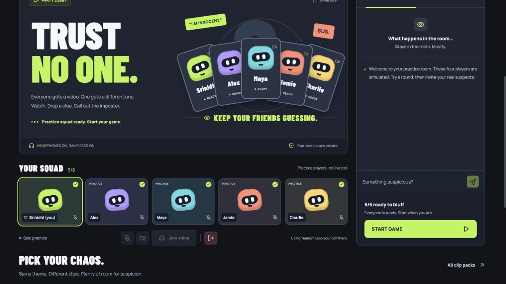

AlibiProduct story · 5 min read
Watch privately. Give just enough away.
A social video-imposter game that takes a group through private clips, one-word clues, discussion, voting and a reveal.
Read the case study
Actual local browser interface. The five-player diagram explains the rules before a room starts.
View full size ↗01 The problem
How can a shared round protect information that belongs to one player?
A social-deduction game loses its rhythm when someone misses a step or sees information too soon. Alibi gives most players the same clip and one player a related alternative, then moves the group through clues, discussion and voting. The flow needs to protect the mystery without making the group wait without an explanation.
Designed for Friend joining a social video game. Understand the phase and what can safely be shared.
User context Design assumption
Entering a room and learning the round while keeping a clip private.
- The friction
- Playback delays and unclear waits interrupt the group.
- Design implication
- Show readiness, private boundaries and the host’s next available action.
Example situation · illustrative scenario. Imagine one person still watching while everyone else begins discussing their clue. The game needs to coordinate the phase without revealing which clip anyone received.
02 The direction
What shaped the design
Shared timing and private information need separate treatment. A visible phase can coordinate the room without exposing a clip or a vote.
Original project and interface captures · reviewed October 2026
My direction. I made the round sequence explicit and kept solo practice visibly different from a room of real players.
Process and product scope
I structured each round as private viewing, one-word submission, shared clues, discussion, a hidden vote and the reveal. Players need a shared phase and a private view at the same time.
I used a solo practice path with clearly labelled simulated opponents so the whole sequence can be tried before inviting friends. A practice lobby should not look like proof that other people are connected.
The project includes room chat and built-in calling, with external calls as another option. Playback depends on YouTube availability and embedding, and the server keeps room state in memory. Those limits make readiness, replacement clips and host recovery controls part of the design.
- 3–8
- players in a room
- One word
- clue from each player
- Private
- clips and votes before reveal
- Enter
Create or join a room, or choose labelled solo practice.
- Watch and clue
See a private clip and submit one word.
- Discuss and reveal
Compare shared clues, vote privately and see the result.
03 Design decisions
The choices behind Alibi
Open a decision to see the reasoning and trade-off.
01Keep private viewing separate from the group phase
Show each assigned clip privately and release clues together after submission or timeout.
Why this matters. Early clues or role information could change the game before everyone has had a chance to act.
The trade-off. A shared phase still needs a clear explanation when a player is loading or has not submitted.
02Make practice an honest invitation
Label simulated players throughout solo practice and let the person try the real sequence.
Why this matters. Someone can learn the rhythm without assembling a group or mistaking demo activity for real participants.
The trade-off. Practice can explain controls but cannot reproduce the conversation and hesitation of a group.
03Explain waits and recovery
Keep the current phase, readiness and host controls visible when playback or connection needs attention.
Why this matters. The group needs a next action rather than an unexplained delay.
The trade-off. A replacement clip or returning player can affect the round. The interface needs to say when play restarts instead of hiding that change.
04 The outcome
A private clip inside a shared round.
I connected the lobby, private watching, clues, discussion, votes and reveal into one group flow. Solo practice explains the steps with simulated opponents; connected rooms support real players. A study with a real group is the next step for evaluating the social experience.

More about the experience
- Labelled practice. The capture includes simulated players rather than fabricated participation.
- Playback dependency. Clips use the official YouTube player and can be unavailable.
05 Reflection
A clear next step leaves more room for the conversation.
I would watch a real group through a failed clip and a late player, not just a successful reveal. Those pauses would show whether the instructions preserve the social rhythm or turn the host into technical support.
What I would evaluate next proposed work
- run a short group session and observe phase explanations, accidental information sharing and waiting time.
- a blocked YouTube embed, a reconnecting player, a departing host and switching between built-in and external calling.
Finding a class file should be straightforward.